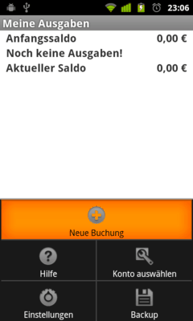

"Neue Buchung" öffnet den Bildschirm für die Eingabe einer neuen Buchung.

Passen Sie Datum und Uhrzeit an, klicken Sie auf den Knopf "-" um zwischen Ausgabe und Einnahme zu wechseln, geben Sie Betrag, Notizen und Empfänger (bzw. Zahler) ein. Durch Klick auf den Knopf "Auswählen" kommen Sie zum Bildschirm "Kategorie auswählen". Dieser wird später erklärt.
In der Liste der Buchungen, kann jede Buchung durch einen kurzen Klick bearbeitet werden, das Kontextmenü erlaubt das Löschen und die Anzeige von Detailinformationen (Empfänger, Notizen).